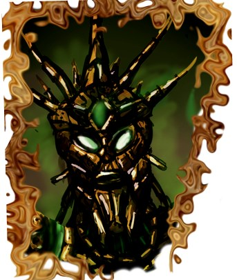

Zwanzig Jahre später
Die Aktivierung Numidiums, Tiber Septims verschollen geglaubter Geheimwaffe, zertrümmert die Zeitläufe an der Iliac mehr als gründlich, und als sich die Stunden wieder stabilisiert haben, ist das Machtgefüge im Westen für immer verändert.
Kaiserliche Propaganda hat das Phänomen als von den Göttern bewirktes “Wunder des Friedens” bezeichnet, das sich dem Begreifen der Sterblichen entzieht. Besser bekannt ist es als die “Verwerfung im Westen”: Eine Katastrophe von übernatürlichen Himmelsphänomenen und gigantischen Unwettern, apokalyptischen Verheerungen, lokalen Zeitsprüngen, verschwundenen Bevölkerungen und über hunderte Meilen gesprungenen Heeren - und natürlich widersprechen die Berichte einander in jeder Hinsicht.
Als sich der Rauch verzieht, sind die vielen kleinen Herzogtümer, Baronien und Stadtstaaten an der Iliac unter die Herrschaft der vier Königreiche Dolchsturz, Schildwacht, Wegesruh und Orsinium gefallen. Natürlich sind es auch die Monarchen dieser Mächte, die zuvor um die Kontrolle Numidiums gestritten haben. Die Katastrophe des letzten Aktes setzt einen Schlusspunkt unter so manche ihrer Intrigen und schafft ein neues politisches Gleichgewicht an der Iliac.
Zwanzig Jahre später haben sich der Zeitdrache und die Lage im Westen wieder eingerenkt. Aber was wurde aus den Hauptakteuren des Spiels?
Barenziah und Helseth kehren an den Hof von Gramfeste zurück, den sie während des Simulacrums verlassen hatten. Bald darauf wird Hlaalu Helseth als Nachfolger seines plötzlich verstorbenen Großonkels Hlaalu Athyn Llethan zum König von Morrowind gekrönt. Die Thronfolge gibt einigen Anlass zu Spekulationen. In Gramfeste machen Pamphlete die Runde, die Helseth als brillianten und skrupellosen Giftmischer zeichnen. Die Ra’athim verstehen aber, die Gerüchte zu ihren Gunsten zu nutzen. Während Barenziah, selbst jahrhundertelang Königin der Dunkelelfen, scheinbar im Hintergrund bleibt, interpretiert der ehrgeizige Helseth die Rolle des Königs von Morrowind neu. Er beginnt einen Machtkampf mit dem Tempel der Tribunalsgöttin Almalexia und setzt die Dunkle Bruderschaft auf den Helden der nerevarinischen Prophezeiungen an. Nach dem Niedergang des Tribunals versucht der König in einem erstaunlichen Bündnis mit Haus Dres, die Sklaverei in Morrowind abzuschaffen. Das Schicksal von Helseth und Barenziah im Roten Jahr ist leider nicht berichtet.
Barenziahs Tochter Morgiah war noch vor dem Tod Eadwyres nach Ersthalt auf Auridon verheiratet worden, ein diplomatischer Erfolg der Dunkelelfenfraktion von Wegesruh. Die Verbindung mit König Reman Karoodil erweist sich für Morgiah als politischer und privater Glücksgriff, bleibt aber für viele konservative Altmer unerträglich. Remans verschmähte Konkubine Gialene, Tochter des Königs von Himmelswacht, revoltiert mit den traditionalistischen Trebbiter-Mönchen und gedungenen Söldnern gegen die “Schwarze Königin”, aber der Aufstand scheitert. Morgiahs Kinder Goranthir und Rinalla, halbblütig Dunmer und Altmer, sind die Thronerben von Ersthalt - zumindest bis zum Aufstieg der Thalmor.
Gortwog gro-Nagorm führt seine Gründung Nova Orsinium zu beträchtlichem Einfluss in den Wrothgarischen Bergen und am Bjoulsae. Ein Bündnis mit Elysana beendet die alte Feindschaft zwischen Orks und Wegesruhern. Gortwog schickt Abenteurer in alle Winkel der Welt, um erlesene Schätze für seine Hallen zu bergen. Die Anerkennung des neuen Orsinium als reguläre Provinz des Kaiserreichs rückt näher als je zuvor, aber gegen die Politik des Orkkönigs rührt sich auch Widerstand. Seine Bevorzugung des Elfenhelden Trinimac über den orkischen Pariagott Malacath (der aus der mythischen Korrumpierung Trinimacs durch Boethiah hervorgegangen war) verursacht ein religiöses Schisma. In der frühen Vierten Ära teilt Gortwogs Orsinium das Schicksal seiner Vorgänger und wird von Heeren aus Hochfels und Hammerfall zerstört.
Dolchsturz wird seit dem Betonienkrieg von Lysandus’ Sohn Gothryd und Aubk-i, der Prinzessin von Schildwacht, regiert. Eines ihrer vier Kinder trägt den Namen seines in diesem Krieg gefallenen Großvaters Camaron. Die Vermählung Prinz Camarons mit Selmyna von Camlorn baut die Hegemonie von Dolchsturz an der Nordwestküste weiter aus. Der Einfluss des Drachen reicht von Ykalon im Norden bis Anticlere im Osten, wo sein Gebiet nach der Verwerfung nun direkt an die Besitzungen von Wegesruh grenzt. Von Lysandus’ Witwe Mynisera, seiner Hexenmutter Nulfaga in Schloss Shedungent und der Zauberin Medora Direnni im adamantenen Turm von Balfiera haben wir nichts weiter gehört.
König Camarons Witwe Akorithi und ihr Sohn Greklith sterben beide an einer Seuche. Da Prinzessin Aubk-i mit Gothryd von Dolchsturz verheiratet ist und Prinz Arthago vor Jahren heimlich auf Befehl seiner eigenen Familie hin ermordet worden war, regiert nun Lhotun als letzter überlebender Sohn Camarons im Samaruik. Er bemüht sich um einen dritten, unabhängigen Kurs zwischen den seit Jahrhunderten verfeindeten Rothwardonenparteien der Kronen und Ahnherren. Schildwacht hat in der Verwerfung die größten Gebiete gewonnen und Lhotun regiert nun als einer der mächtigsten Könige Tamriels von Abibon-Gora am Eltherischen Ozean bis nach Gramen jenseits der Drachenschwanzberge.
Uriel Septim VII. bleibt noch einige Jahrzehnte Kaiser von Tamriel und kämpft weiter darum, der Folgen von Tharns Simulacrum Herr zu werden und andere Gefahren für das Kaiserreich abzuwenden. Unter seine Herrschaft fällt die Vvardenfell-Krise, worin der Klingenorden erneut eine wichtige Rolle in den Schatten einnimmt. Mit der Ermordung des Kaisers durch einen dagonistischen Geheimkult beginnt die Oblivion-Krise, die das Ende von Tiber Septims Dritter Ära einläutet. Von Brisienna, der obersten Klingenagentin im Westen, haben wir nichts weiter gehört. Durch die Verwerfung ging der Kontakt zu vielen Spionen verloren. Von dem kaiserlichen Agenten, der die Ereignisse an der Iliac in Gang gesetzt hatte, fehlt ebenfalls jede Spur.
Mannimarco, König der Würmer, steigt in der Verwerfung zum Gott auf, aber der Anspruch bleibt umstritten und wohl nicht bestehen, als die gebrochene Zeit wieder zusammengeflickt wird. Die Nekromanten raunen aber, dass sich der Totenbeschwörermond bald als Zeichen des großen Wiedergängers und seiner Apotheose am Himmel zeigen wird. Während der Oblivion-Krise führt der wiedergekehrte Mannimarco noch einen großen Angriff auf Galerions Magiergilde.
Hat der Unterkönig seine letzte Ruhe gefunden? Der Chronist Niso berichtet, dass sich jener, der einst Arctus war, nach der Verwerfung im Westen wieder den Angelegenheiten der Sterblichen zuwandte. Aber das ist zweifelhaft, denn wir haben nichts mehr von ihm oder seinen Agenten vernommen. Wenige Jahre später vergeht die Septim-Dynastie, der ein Zeitalter lang sein Rachedurst galt. Vielleicht hat der Schatten des Kampfmagiers (und des Aschekönigs, wenn man die Häresien liest) nun also endlich seinen Frieden gefunden.
Quellen:
TES III: Morrowind • TES IV: Oblivion • The Elder Scrolls: Codex (Website) • Kleiner Reiseführer durch das Kaiserreich (3. Auflage) • Der Seelenlord • Die Verwerfung im Westen • Wo wart Ihr, als der Drache brach? • Das gesprochene Wort • Ein Spiel beim Bankett • Der Aufstand von Ersthalt • Nacht über Schildwacht • Arkay der Feind • Totenbeschwörermond • Die Arcturische Häresie
Artworks:
• TES II: Daggerfall • Numidium von Thobewill, Deviant Art • Daggerfall Mannimarco von Lady Nerevar, The Provisional House